终于有人把数据指标体系讲明白了：指标怎么定、怎么分、怎么用一次讲透
来源：微信公众号 归档日期：2026-09-22 抓取状态：成功 原文字符：6816｜配图：31 张
摘要速览
- 讲解数据指标体系：很多企业报表和指标越来越多却说不清自身状况；文章讲透指标怎么定、怎么分类、怎么使用，适合关注数据分析与风控指标的读者。
核心内容
- 原文已完整抓取，按章节分层；细节以「原文沉淀」为准。
- 配图 31 张本地化到
_assets/20260922-data-metrics-system/。
可执行启发
- 按原文目录定位相关章节精读。
- 引用数据/步骤时打开对应小节。
我的想法
（待补充）
原文沉淀
目录
- 先搞懂：指标体系不是“把所有指标装进一个表”
- 这个数字变化以后，企业知道下一步应该看哪里吗？
- 指标到底怎么定？先找问题，再找指标
- 指标到底怎么分？不要把不同维度的分类混在一起
- 第一种分类：从经营管理角度看
- 管理层最关心的是：
- 第二种分类：从数据生产角度看
- 数据团队关注的是：
- 指标到底怎么计算出来？
- 指标体系最难的一步，其实是统一口径
- 1.业务定义
- 销售额到底是：
- 2.统计范围
- 是否包含：
- 3.时间口径
- 到底按照：
- 4.金额口径
- 5.统计粒度
- 按订单统计，还是按订单明细统计？
- 6.数据来源
- 订单系统、ERP和财务系统里都有金额，到底谁是权威数据源？
- 7.更新频率
- 这个指标是实时、小时级还是T+1？
- 指标建完了，为什么很多企业还是不会用？
- 第一层：监控。
- 发生了什么？
- 第二层：诊断。
- 为什么发生？
- 第三层：行动。
- 接下来应该做什么？
- 最后还要解决一个问题：半年以后，这套指标还能不能信？
- 是否已经存在同义指标？
- 哪些数据任务、报表和业务系统会受到影响？
- 还有哪些地方正在使用它？
很多企业做数据分析，做到最后都会遇到一个很奇怪的问题：
报表越来越多，指标越来越多，但企业反而越来越说不清自己的经营状况。
** **
财务有一套收入，销售有一套收入，运营还有另一套收入；
老板问一句“这个月利润为什么掉了”，会议室里马上出现十几张表，每张表的数据看起来都有道理，却很难迅速找到真正的原因。
更常见的问题是：
- 销售额到底按下单、付款还是确认收入统计？
- 退款算本月还是原订单月份？
- 客户数到底算注册、下单还是付费客户？
- 毛利到底扣不扣渠道返利、物流和促销费用？

这些问题表面看是在争一个数字，本质上却说明企业缺少一套统一的指标体系。如果你正在做经营分析、数据治理或者指标梳理，可以参考《企业指标体系白皮书》。
里面从经营目标、关键业务动作、指标拆解一直讲到指标字典和落地方法，比单纯整理一份“指标大全”更有参考价值。
需要自取：https://s.fanruan.com/3ryjb

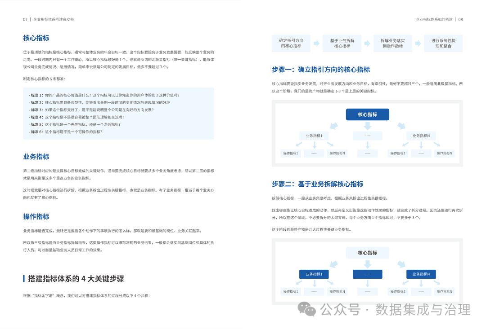
真正成熟的指标体系，本质上是在企业内部建立一套统一的经营语言。

先搞懂：指标体系不是“把所有指标装进一个表”

##
很多企业第一次做指标体系，通常会先让每个部门提交指标。
销售交一份，财务交一份，供应链交一份，人力再交一份。
最后合并成一个几百甚至几千行的Excel：
销售额、利润率、订单量、库存周转率、客户数、离职率、交付及时率……
看起来非常完整。
但这其实更接近指标清单，还不能称为指标体系。
真正的指标体系应该存在清晰的因果链：
战略目标 → 经营目标 → 关键业务过程 → 业务动作 → 衡量指标。
** **
假设今年公司的核心目标是：
利润增长20%。
** **
利润增长不能只盯着“利润率”。
继续往下拆，至少可能受到：
收入增长、产品结构、采购成本、制造成本、营销费用、渠道费用、履约成本影响。
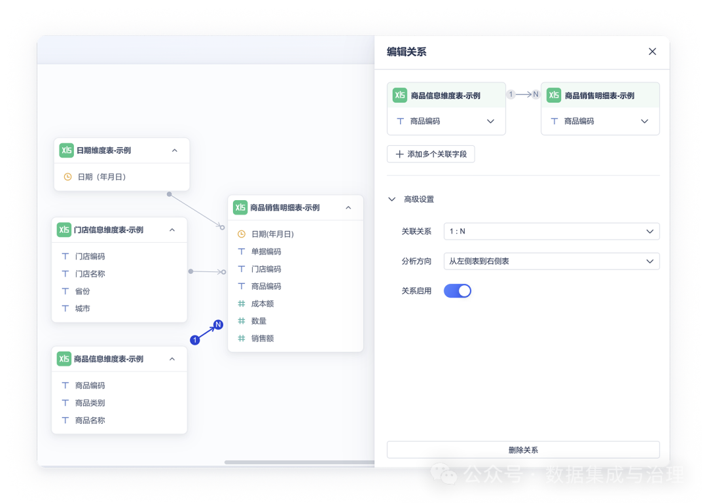
收入又可以继续拆：
收入 = 客户数 × 购买频次 × 客单价。
** **
客户数还能进一步拆成：
期初客户 + 新增客户 - 流失客户。
** **
这样一层层向下，最终才能找到业务真正能够干预的地方。
所以判断一个指标有没有价值，可以问一个很简单的问题：
这个数字变化以后，企业知道下一步应该看哪里吗？
** **
如果答案是否定的，它大概率只是一个展示指标。
而这套指标关系能不能长期成立，还取决于下面的数据是否稳定。
客户可能在CRM，订单在ERP，库存来自WMS，生产数据又在MES，如果每次分析都临时从几个系统导Excel再拼，今天算出的客户数和下个月未必还是同一套逻辑。
因此在实际建设中，很多企业会先通过 FineDataLink 5.0 把分散在业务系统中的订单、客户、商品、库存等数据接入统一的数据链路，再做清洗、转换和关联。
这样上层设计指标时，讨论的重点才能逐渐从“这个数据到底去哪找”，转向“这个指标应该怎么定义”。
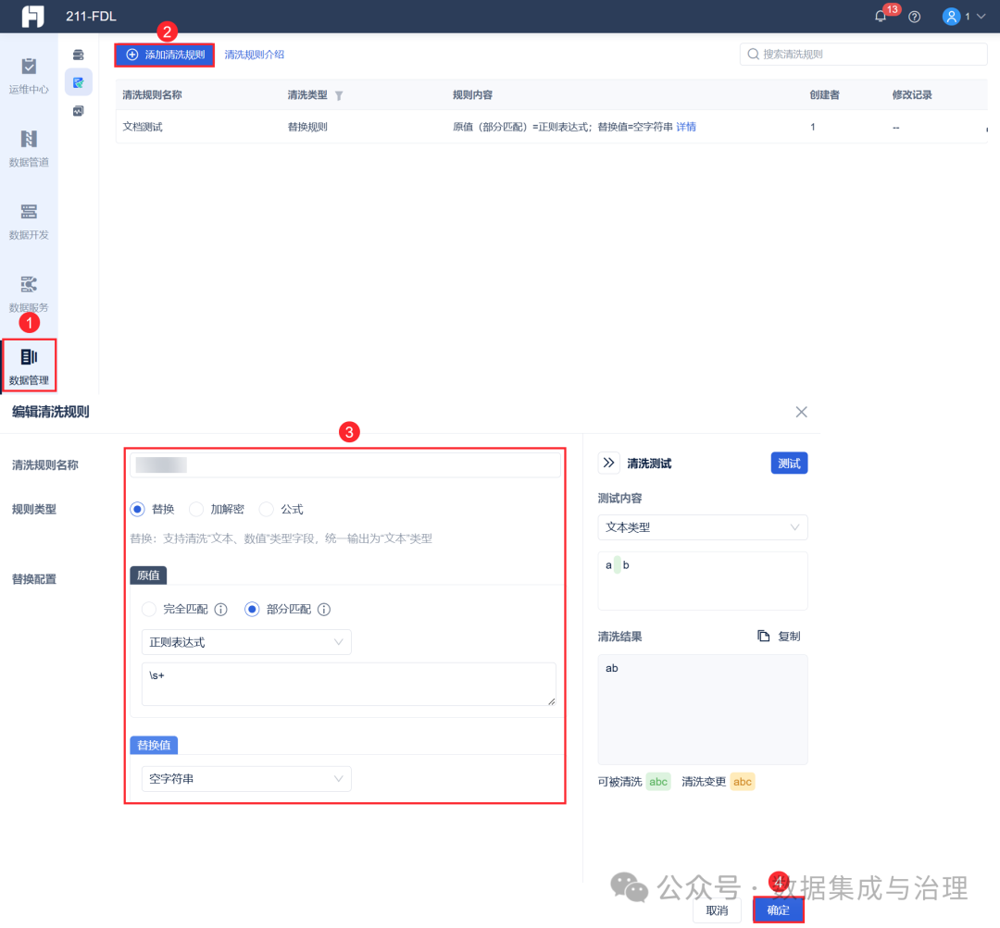
指标体系往上连接经营目标，往下必须连接真实业务数据。
缺一层，最后都会变成纸面体系。

指标到底怎么定？先找问题，再找指标

##
指标体系最容易做反的一件事，就是：
先看数据库里有什么，再决定能做什么指标。
- 于是订单表里有金额，就做销售额；
- 客户表里有ID，就做客户数；
- 库存表里有数量，就做库存量。
最后企业会得到很多“能够计算”的指标，却不一定得到真正“值得管理”的指标。
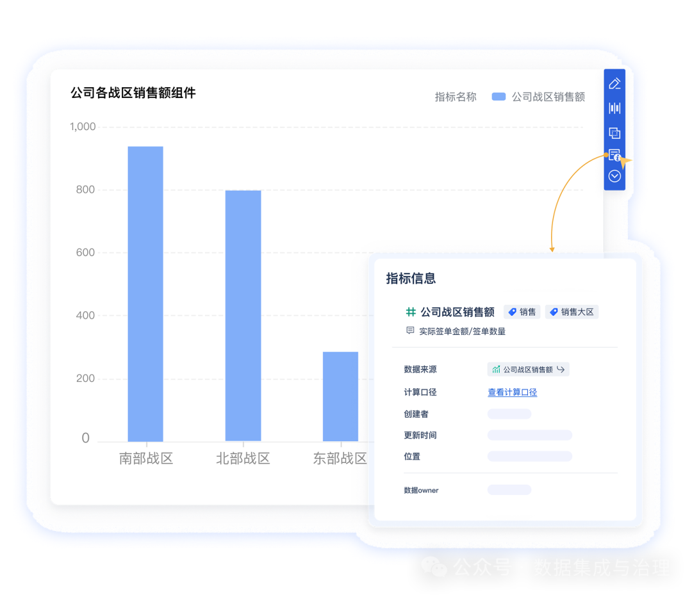
更合理的方法应该反过来：
先明确经营问题，再决定用什么指标衡量。
** **
假设业务目标是：
提高老客户复购。
** **
第一步不是马上定义复购率，而是先拆影响复购的业务因素：
- 产品是否满意？
- 交付是否及时？
- 售后体验怎么样？
- 客户有没有被持续运营？
于是才会逐渐形成：
复购率、二次购买周期、退货率、客诉率、准时交付率、售后响应时长、会员活跃率。
** **
这里还有一个很重要的原则：
结果指标负责告诉你“好不好”，过程指标负责告诉你“哪里出了问题”。
** **
如果企业只看结果指标，往往会出现一种情况：
月底发现利润下降了，
但具体是价格下降、采购成本上涨、低毛利产品占比提高，还是渠道费用失控，并不知道。
真正有管理价值的指标，必须能够继续向下追。
因此，一套好的指标体系不是指标越多越好，而是形成：
核心结果指标少而稳定，驱动指标能够解释结果，过程指标能够定位动作。
** **
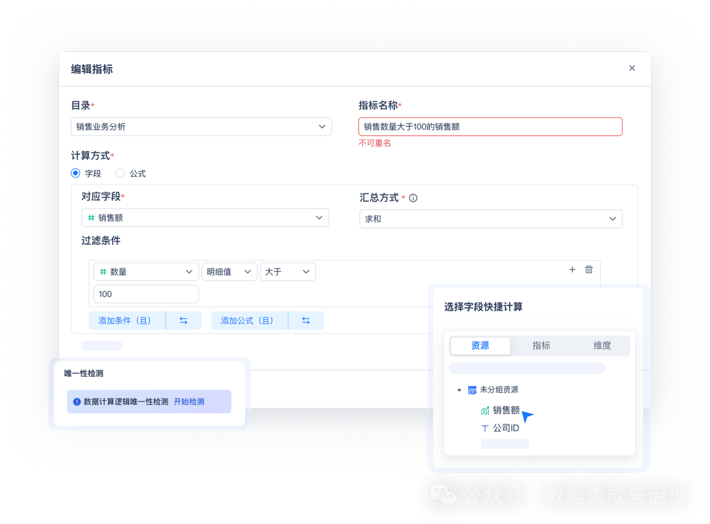

指标到底怎么分？不要把不同维度的分类混在一起

##
指标体系里有一个很常见的问题：
战略指标、过程指标、原子指标、派生指标、复合指标全部摆在同一个层级里。
其实它们回答的是不同问题。
第一种分类：从经营管理角度看
###
管理层最关心的是：
- 结果怎么样？
- 为什么？
- 问题发生在哪？
** **
因此可以形成三层：
结果指标 → 驱动指标 → 过程指标。
** **
假设核心结果指标是“销售收入”。
向下可以拆成：
客户数 × 客单价 × 购买频次。
** **
客户数继续拆：
新增客户、活跃客户、流失客户。
** **
新增客户再继续对应：
线索量、线索转化率、商机转化率。
** **
这样形成的实际上是一棵指标树。
当销售收入下降时，管理者不是只看到一个红色数字，而是可以顺着指标关系不断向下定位。
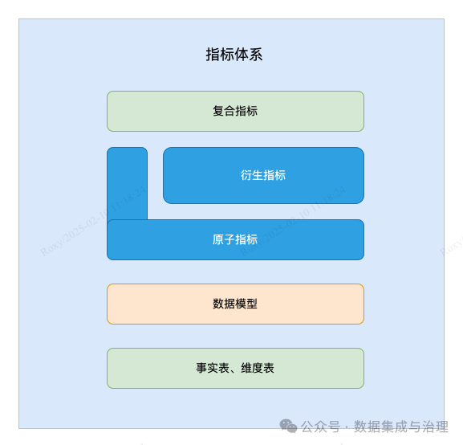
第二种分类：从数据生产角度看
###
数据团队关注的是：
指标到底怎么计算出来？
** **
这里更常见的是：
原子指标 → 派生指标 → 复合指标。
** **
原子指标，是最基础、不可再拆的度量。
比如：
订单金额、订单数量、客户数量。
派生指标，是原子指标增加统计范围、时间和维度。
比如：
本月华东区已支付订单金额。
** **
复合指标，则由多个指标进一步计算：
- 客单价 = 销售额 ÷ 订单数
- 转化率 = 成交客户数 ÷ 有效线索数
- 库存周转率 = 销售成本 ÷ 平均库存。
** **
真正落地时，一项派生指标背后往往包含状态过滤、时间判断、字段标准化、维度关联甚至多张表Join。如果这些逻辑散落在几十张报表和SQL中，指标一旦改口径，就要一张张找。
在 FineDataLink 5.0 的数据开发链路里，可以把这些清洗、转换、关联和计算过程组织成固定任务，并管理任务之间的上下游依赖。
这样“华东区已支付订单金额”不再只是报表里的一段临时SQL，而能对应到相对稳定的数据加工过程。
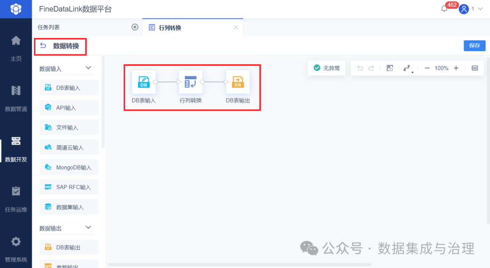
所以，管理层看到的是指标关系，数据团队维护的是指标生产逻辑。
这两个视角必须同时存在。

指标体系最难的一步，其实是统一口径

##
企业真正发生争议的，通常不是指标叫什么。
而是：
到底怎么算。
** **
以最普通的“销售额”为例。
至少要明确七件事。
1.业务定义
###
销售额到底是：
下单金额、支付金额、发货金额，还是财务确认收入？
2.统计范围
###
是否包含：
取消订单、退款订单、测试订单、内部交易？
3.时间口径
###
到底按照：
下单日期、支付日期、发货日期还是收入确认日期？
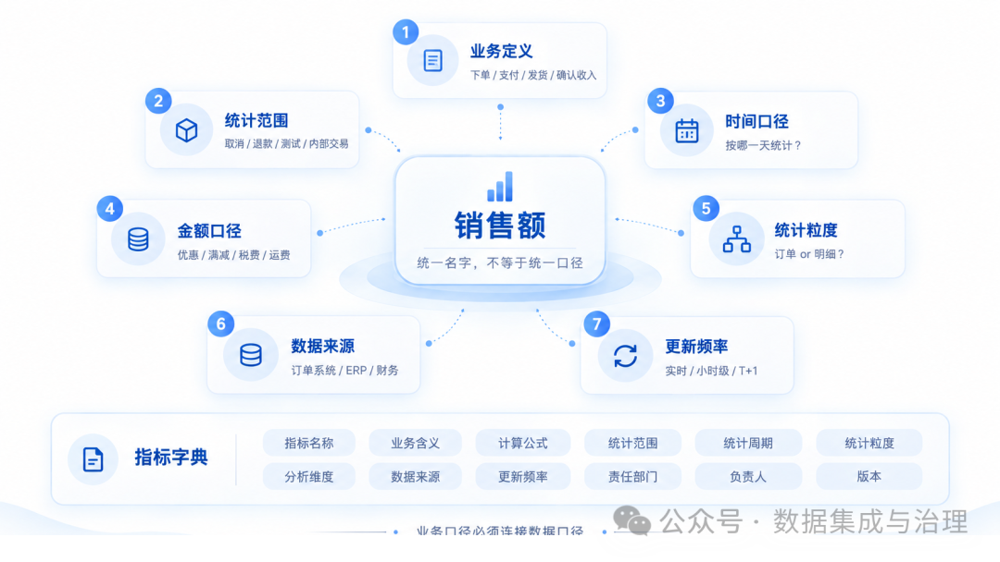
4.金额口径
- 优惠券怎么算？
- 满减怎么算？
- 税费、运费是否计入？
5.统计粒度
###
按订单统计，还是按订单明细统计？
一笔订单购买三个商品，究竟算一笔还是三条业务事实？
6.数据来源
###
订单系统、ERP和财务系统里都有金额，到底谁是权威数据源？
7.更新频率
###
这个指标是实时、小时级还是T+1？
这七个问题不解决，所谓“统一指标”只是统一了名字。
所以成熟的指标体系一定要建立指标字典。
至少记录：
指标名称、业务含义、计算公式、统计范围、统计周期、统计粒度、分析维度、数据来源、更新频率、责任部门、负责人和版本。
** **
这里还有一个更深的问题：
业务口径和数据口径必须连接起来。
** **
业务说“有效订单”，数据侧必须知道到底对应哪些状态字段；
业务说“新客户”，数据侧必须明确首次下单、首次支付还是首次注册。
FineDataLink 5.0 在这一层更接近于把已经确定的业务规则落实到数据加工过程：字段怎么转换、哪些记录被过滤、不同来源怎样关联，都可以进入具体任务链路。
以后口径发生变化，也更容易顺着加工过程找到受影响的数据。
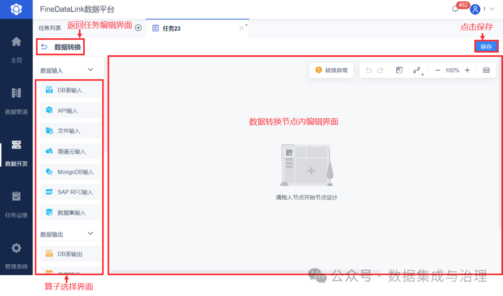
否则指标字典写得再漂亮，底层SQL还是各写各的，口径最终还是会重新分裂。

指标建完了，为什么很多企业还是不会用？

##
因为指标体系真正产生价值，需要完成三个层次：
监控 → 诊断 → 行动。
** **
第一层：监控。
回答：
发生了什么？
** **
比如：
本月毛利率从28%下降到24%。
第二层：诊断。
回答：
为什么发生？
** **
继续拆：
- 是销售价格下降？
- 原材料上涨？
- 低毛利产品占比增加？
- 折扣变大？
- 物流成本提高？
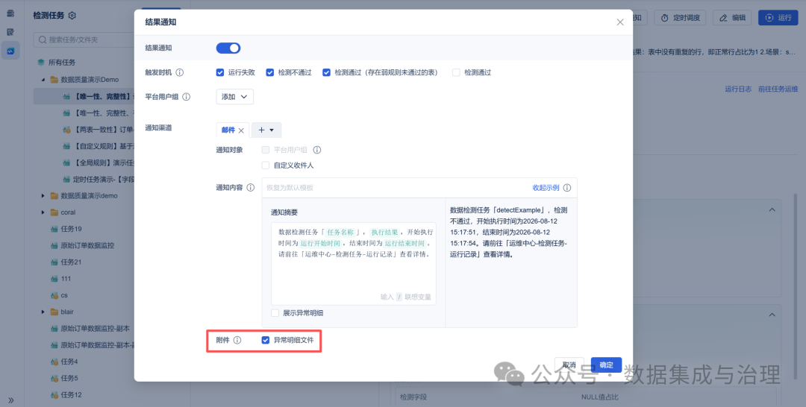
第三层：行动。
回答：
接下来应该做什么？
** **
例如：
- 采购重新谈供应商价格；
- 销售调整折扣权限；
- 产品部门优化产品结构；
- 供应链优化履约路径。
这也是指标体系最容易被忽略的一点：
指标不是为了证明“数据平台算得出来”，而是为了缩短企业从发现问题到采取行动的距离。
** **
因此真正好的指标体系，还应该建立指标之间的归因路径。
- 看到利润下降，可以向下看毛利；
- 毛利下降继续看价格、成本和产品结构；
- 成本异常继续追采购、制造和物流。
最终让一次经营分析形成：
异常发现 → 指标拆解 → 原因定位 → 业务动作 → 结果验证。
** **
这时候，指标才真正进入管理过程。


最后还要解决一个问题：半年以后，这套指标还能不能信？

##
很多企业第一次做指标体系时非常认真。
几百个指标全部梳理完，口径也写得清清楚楚。
但半年以后：
- 新增了业务系统；
- 销售模式发生变化；
- 原来的订单状态调整；
- 一个指标修改了算法；
- 又新增几十张报表。
如果没有持续治理，指标体系很快又会回到原来的状态。
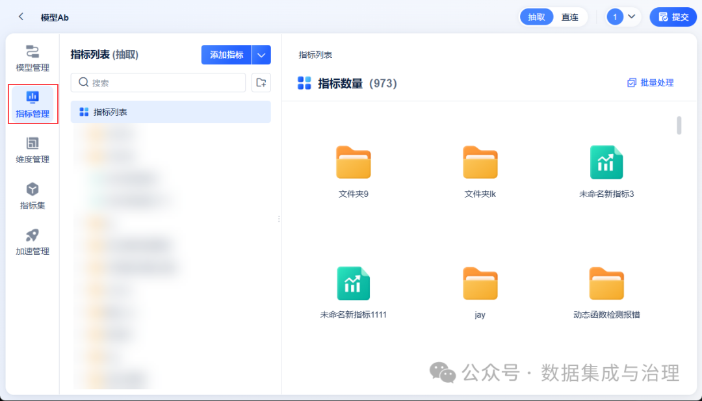
所以指标本身也应该有生命周期：
提出 → 定义 → 审核 → 开发 → 发布 → 使用 → 变更 → 下线。
** **
新增指标时，要检查：
是否已经存在同义指标？
** **
修改指标时，要确认：
哪些数据任务、报表和业务系统会受到影响？
** **
下线指标时，也要知道：
还有哪些地方正在使用它？
** **
这意味着企业不仅要管理“指标结果”，还要逐渐管理指标背后的数据依赖关系。
当底层数据同步、转换和任务调度已经通过 FineDataLink 5.0 串联起来以后，指标治理也就不再完全依赖一张人工维护的Excel。
某项基础数据从哪里来、经过哪些处理、下游进入哪些数据结果，可以和实际的数据任务联系起来，指标发生调整时，排查范围会清楚很多。
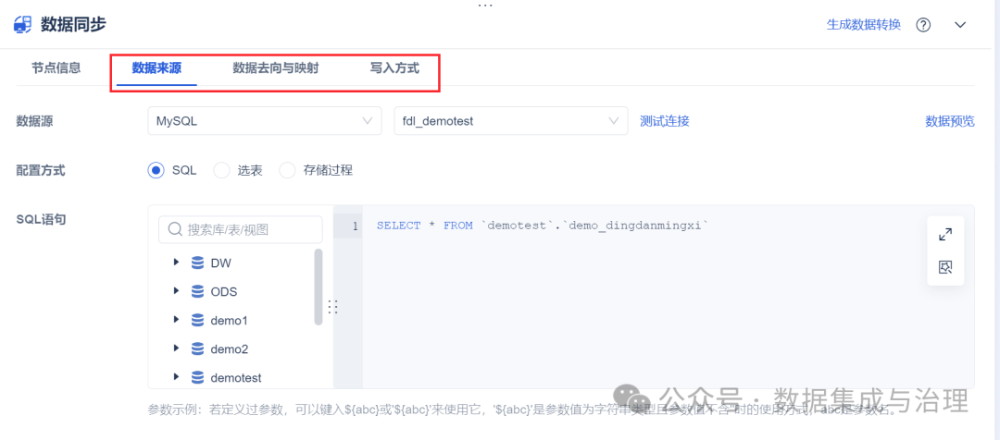
再往上，还需要明确一套责任机制：
- 谁提出指标？
- 谁确认业务定义？
- 谁开发计算逻辑？
- 谁审批口径变更？
- 谁负责长期维护？
只有这样，指标体系才不会变成一次性项目。

结语

##
真正的数据指标体系，从来不是整理几百个指标名称。
它实际上是在企业内部完成一件更重要的事：
把战略目标、业务动作和数据事实连接起来。
** **
一套成熟的指标体系，应该形成这样一条链路：
- 战略目标能够拆成经营目标；
- 经营目标能够拆成关键指标；
- 结果指标能够找到驱动因素；
- 驱动指标能够继续定位业务过程；
- 每个指标都有统一口径；
- 每个口径都能追溯到底层数据；
- 指标出现异常以后，能够找到具体业务动作；
- 业务动作执行以后，还能继续用指标验证结果。
做到这里，指标才真正从“报表里的一个数字”，变成企业经营管理的一部分。
企业最终需要的，也从来不是更多指标。
而是让每一个关键数字都能够回答三件事：
- 发生了什么？
- 为什么发生？
- 接下来应该做什么？
**点击【阅读原文】，体验文中同款资料包 **
归属：[[02-输入/按主题/AI与效率/_index|AI与效率]]
归属：[[02-输入/按主题/AI与效率/_index|AI与效率]]